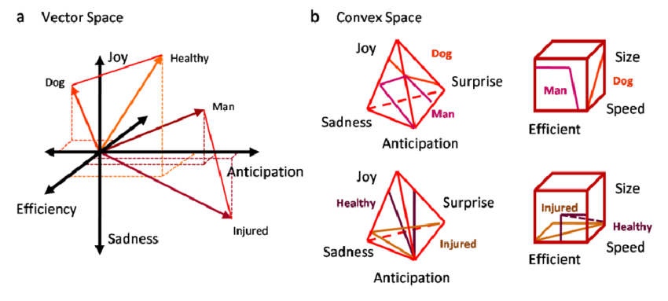
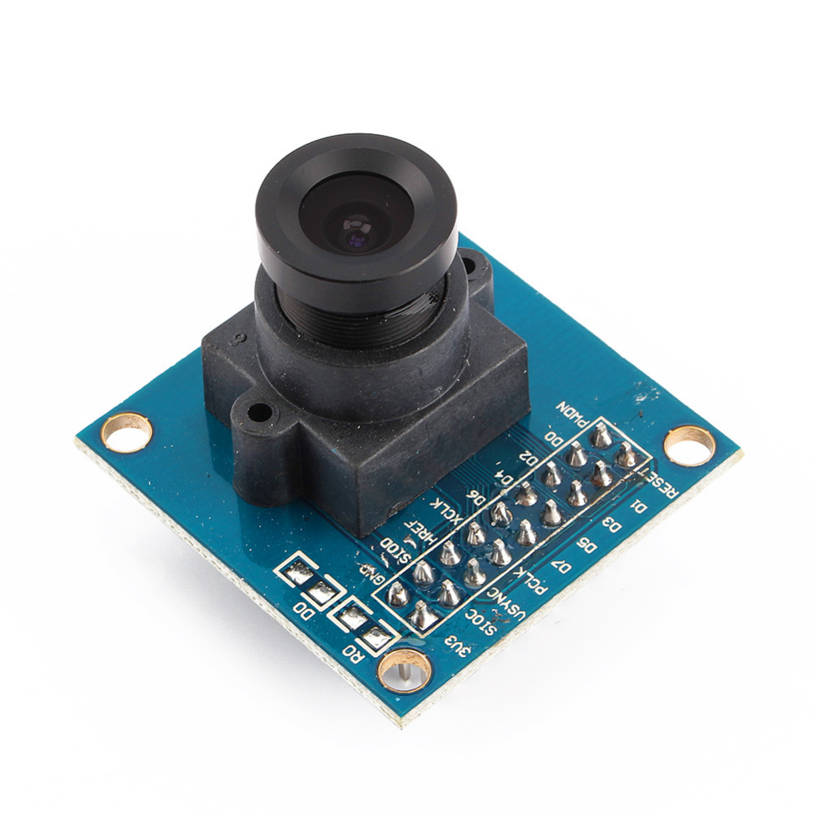

Projects
Project 1: Retrieval-Augmented-Generation Search
I had a lot of documents about differnet topics. One topic was CS 330, for which my documents were different pages.
I wanted to create a LLM chatbot that I could talk to about my topic. I wanted to avoid the problem of hallucination: when the LLM pulls facts out of its robotic butt.
I came up with semantic search: I embedded documents into a semantic space. The user query would also be embedded. Then, the closest document match was returned.
RAG was used when I used a separate LLM to generate potential queries for each chunk of the document (i.e. each paragraph). Those queries were embedded in parallel with their docs.
This made the search much more accurate.
Language: Python

source: https://www.researchgate.net/publication/337485247/figure/fig2/AS:828973005144064@1574653974190/Semantic-space-with-emotional-and-rational-basis-a-One-example-of-Vector-Space-for.png
Project 2: Automation Dashboard
I like to play with Arduino devices. I setup several cameras, each connected to an arduino board, each on a separate
server, monitoring my 3D printer, my plants, etc.
I wanted to check daily if these cameras had lost focus or not. So, I set up a NodeJS script that would
remote into the camera server, fetch the currently displayed image off the localhost, and return it.
Then, the server ran some algorithms to determine the image sharpness. If it fell below a threshold, a command was sent
to refocus the camera.
Language: NodeJS

Source: https://www.arducam.com/wp-content/uploads/2020/12/ov7670-arduino.png
Project 3: Continual Deep Learning
Deep learning is a field of machine learning that focuses on models that imitate the human brain:
networks of neurons. The kicker is that the human brain can learn many tasks, deep learning models can't.
A DL model can learn one task very well (e.g. classifying an image as a dog/cat). It can learn a second task
very well (e.g. classifying an image as a car or train). However, in learning that second task, it completely forgets
how to do the first task. Of course, this is not a problem suffered by humans, which begs the question, how do we fix it?
I'm currently in researching this issue. Right now, we're using a mixture of experts model, where each model is trained
on a separate task. We're investigating how effective task similarity measures are in routing new tasks to the appropiate network,
to then partially retrain that network.
Language: Python
 Source: https://www.google.com/url?sa=i&url=https%3A%2F%2Ftowardsdatascience.com%2Ftraining-deep-neural-networks-9fdb1964b964&psig=AOvVaw092sKVgz5WtceAxQhOOhbZ&ust=1707889925433000&source=images&cd=vfe&opi=89978449&ved=0CBMQjRxqFwoTCNiBtPfPp4QDFQAAAAAdAAAAABAD
Source: https://www.google.com/url?sa=i&url=https%3A%2F%2Ftowardsdatascience.com%2Ftraining-deep-neural-networks-9fdb1964b964&psig=AOvVaw092sKVgz5WtceAxQhOOhbZ&ust=1707889925433000&source=images&cd=vfe&opi=89978449&ved=0CBMQjRxqFwoTCNiBtPfPp4QDFQAAAAAdAAAAABAD